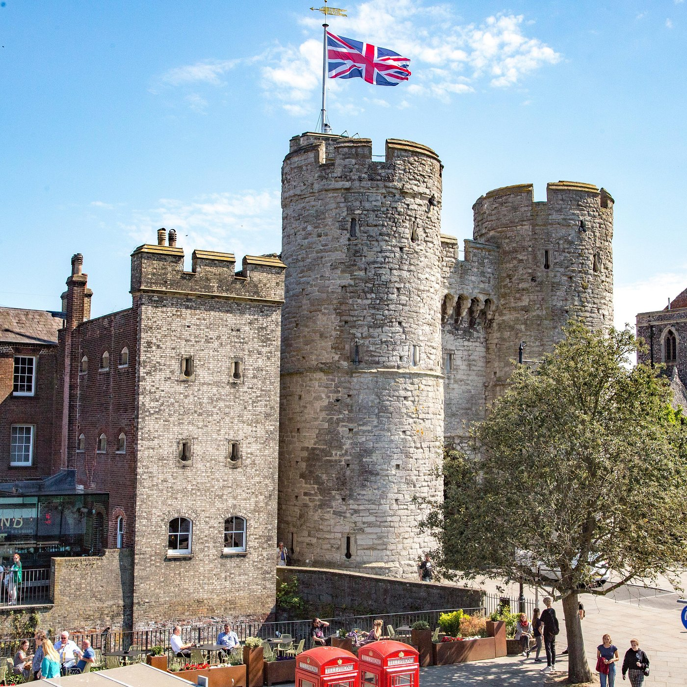
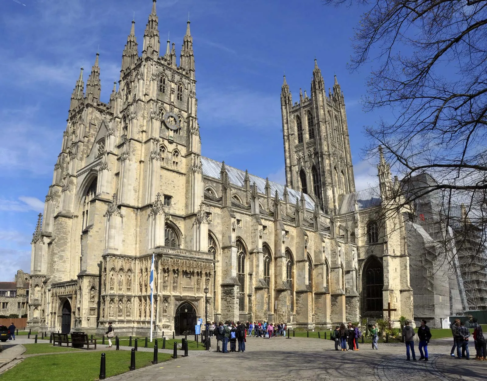
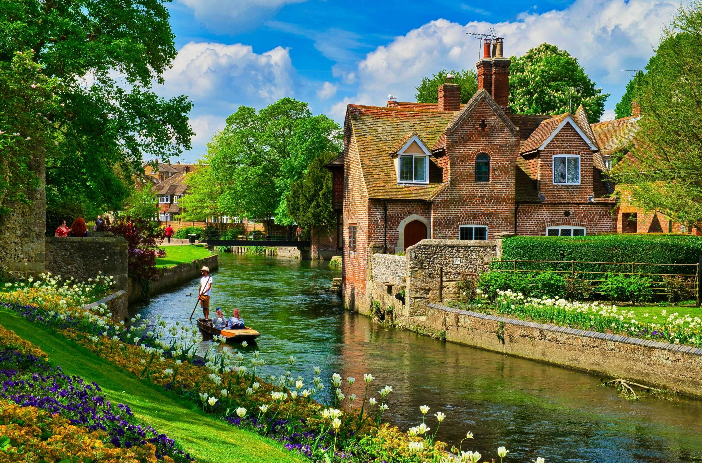
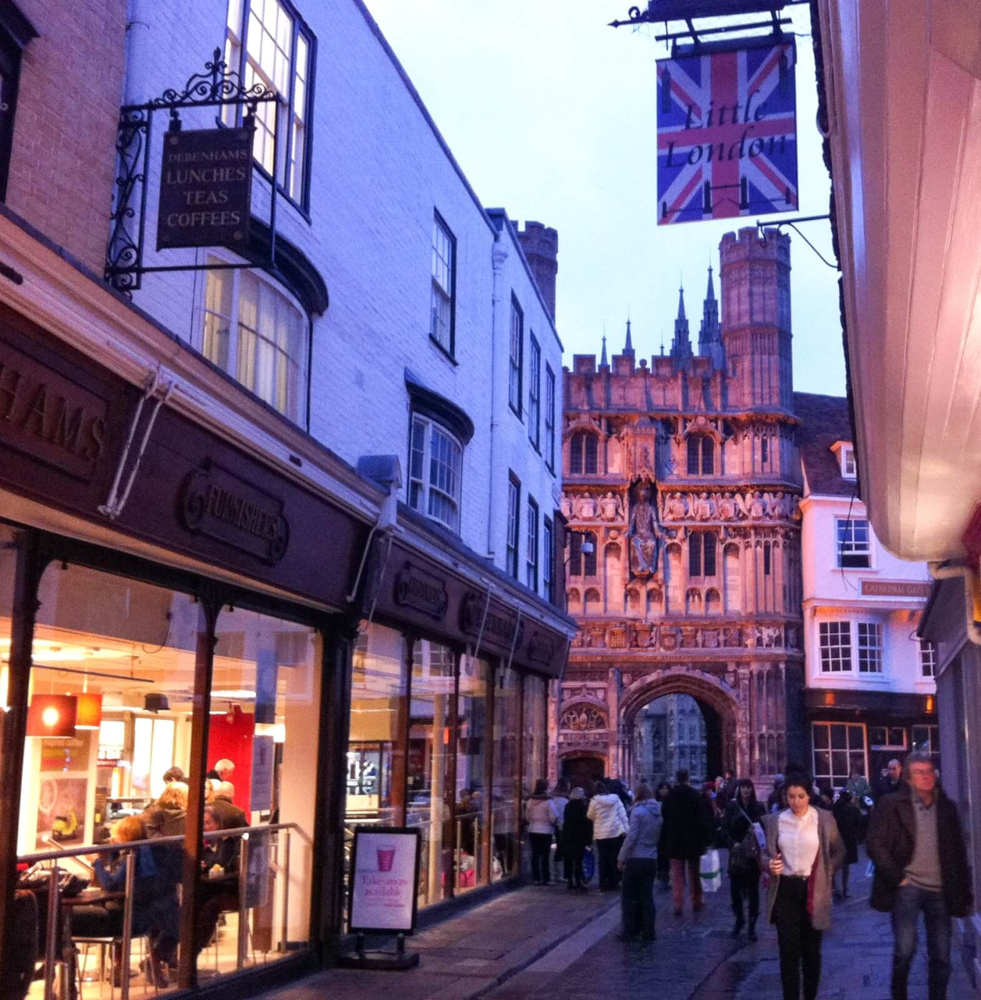

Conheça o countryside!

Cantenbury, localizada no coração de Kent, é uma das cidades mais antigas da Inglaterra. Famosa por sua catedral e história rica, ela encanta visitantes com suas ruas medievais e arquitetura preservada.
Saiba mais
Bem-vindo a Cantenbury!
Saiba mais

Catedral de Cantenbury
Saiba mais
A História de São Tomás Becket
Saiba mais

Construído pelos normandos no século XI, o Castelo de Cantenbury foi uma importante fortaleza durante a Idade Média. Hoje, suas ruínas são um marco histórico da cidade.
Saiba mais
O Castelo de Cantenbury
Saiba mais

Além de seu patrimônio histórico, Cantenbury oferece espaços verdes deslumbrantes, como os Jardins Westgate e o Parque Dane John, ideais para caminhadas tranquilas.
Saiba mais
Os Jardins e Parques
Saiba mais
Mercado de Rua
Saiba mais
